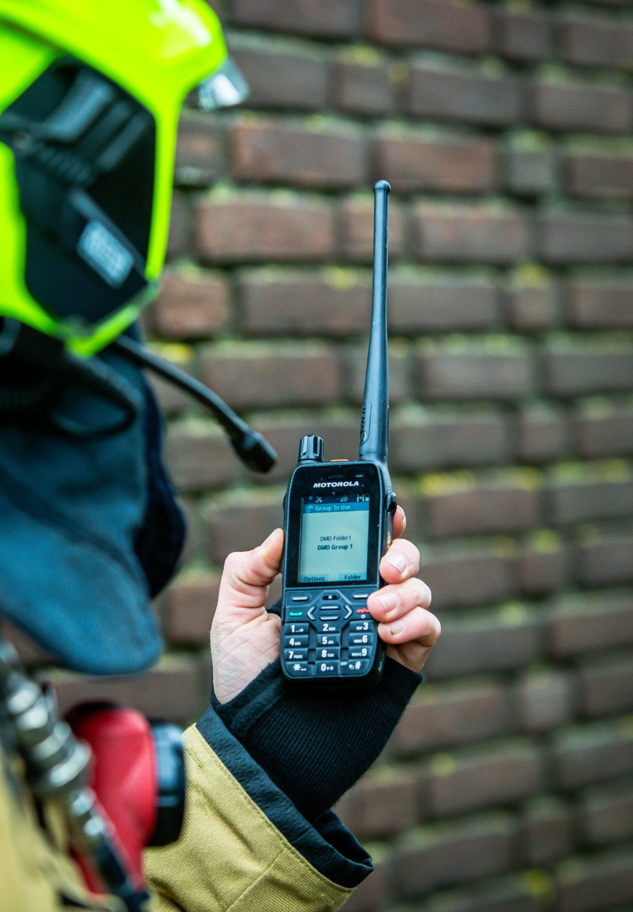

Introduction of digital radio communications system to be used for communication among authorities and organizations dealing with security-related activities, fire fighting, medical protection and other forms of property and personal protection, as well as private companies, was initiated in November 2012.
Internationally standardized digital wireless network replacing existing independent analogue radio networks was now available for the first time. Networks are planned for potential linking of various units into one functional group, especially in line with emergency plans.
In addition to Montenegro, other countries have already introduced TETRA network as well, such as Austria, Belgium, Bulgaria, Croatia, Denmark, Estonia, Finland, Germany, Great Britain, Hungary, Iceland, Ireland, Lithuania, Macedonia, the Netherlands, Norway, Portugal, Serbia, Slovenia and Sweden.

Authorized use: 380–400 MHz
64 Base Stations deployed throughout Montenegro
TETRA ensures secure communication and data transfer capabilities
The Police Administration of Montenegro
Fire-fighting units in all municipalities
Emergency units / dispensaries
Army (for the second mission)
Other government organizations
Private organizations